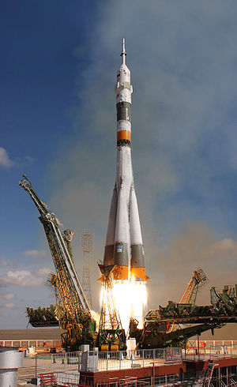
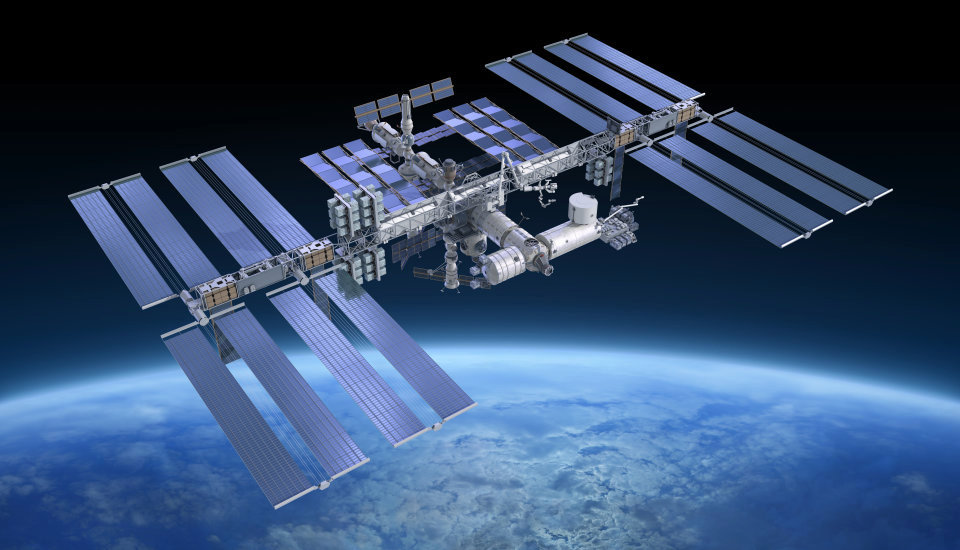

Rakety
Raketa je létající stroj, který se pohybuje pouze na principu akce a reakce. Je poháněna raketovým motorem.
Rakety různých typů se využívají především v kosmickém výzkumu a vojenství, ale i pro zábavu.

Umělé družice
Umělá družice je umělé kosmické těleso, které se pohybuje v prvním přiblížení po uzavřené křivce kolem
přirozeného kosmického tělesa, např. planety nebo jejího měsíce, na rozdíl od kosmických sond, pohybujících
se na počátku jejich letu v gravitačním poli Země po otevřených křivkách.

Mezinárodní vesmírná stanice ISS
Mezinárodní vesmírná stanice, známější pod zkratkou ISS, je v současné době jediná trvale obydlená vesmírná
stanice. První díl stanice, modul Zarja, byl vynesen na oběžnou dráhu 20. listopadu 1998. Od 2. listopadu
2000, kdy na stanici vstoupila první stálá posádka, je trvale obydlena.